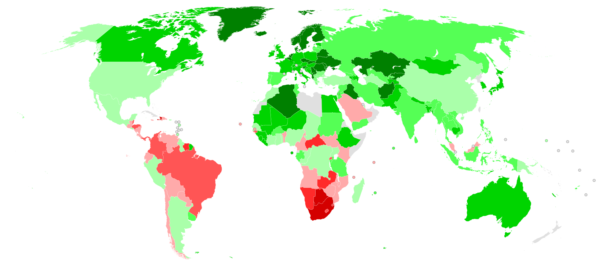

Chapter 3 Concentration measures
Empirical distributions can be very different, especially when the uniformity of the distribution among holders of the characteristic is taken into account. You may be aware that economists are concerned about the development of income distribution in the world population.
Roughly speaking, this involves calculating what proportion of the (poorest) population receives what proportion of income. Ideally, one would like to have a distribution that is not too concentrated, so that the situation where a very small part of the population has an overwhelming share of the income is avoided.
Gini coefficient for income distribution (source: Wikipedia https://de.wikipedia.org/wiki/Gini-Koeffizient):

Other examples of problems where one would like to measure concentration are
- The distribution of shares among shareholders.
- The distribution of corporate loans over the industry sectors.
- The distribution of agricultural land among farmers.
- Goodness of fit for classification models (quantify “purity” of the classes predicted by a model) 🤩.
In this chapter we will learn how to represent such concentration:
- graphically \(\leadsto\) Lorenz curve,
- numerically \(\leadsto\) Gini coefficient and concentration rate.
3.1 Lorenz curve
The Lorenz curve is a graphical representation of the concentration that visualizes the deviation from the uniform distribution.
Example 3.1 (Lorenz curve)
3.1.1 Lorenz curve for a sample
Definition 3.1 (Lorenz curve (sample)) For an ordered sample \(\displaystyle x_{[1]}\leq x_{[2]}\leq \cdots\leq x_{[n]}\) of a metrically scaled characteristic \(X\) and \([i]=[1],\ldots,[n]\), we calculate:
- the cumulative proportion of the total number of holders: \(u_i = \frac{[i]}n\),
- the cumulative feature sums: \(\displaystyle S_i=x_{[1]} + x_{[2]} + \cdots + x_{[i]}\) and
- the cumulative proportion of the total sum of the feature: \(v_i=\frac{S_i}{S_n}\).
The Lorenz curve is the polygon through the points:
\[ (0,0), (u_1,v_1), \ldots, (u_n,v_n)=(1,1). \]
The Lorenz curve embodies which cum. proportion \(v_i\) of the lower edge of the characteristic sum is attributable to which cum. proportion \(u_i\) of the characteristic holders.
In the case of an equal (uniform) distribution \(x_1 = \ldots = x_n\), the characteristic sum is distributed equally among the characteristic carriers. I.e. \(u_i=v_i, i=1,\ldots,n\) and the Lorenz curve corresponds to a diagonal line with a 45 degree inclination.
In the case of a deviation from the uniform distribution, the feature sum is concentrated on a few feature carriers. This means that \(u_i\) is greater than \(v_i\) and there is an unequal distribution in which the “poorest” feature holders receive proportionally less of the feature sum than they would under the uniform distribution. This means that \(u_i>v_i\) and the Lorenz curve runs below the diagonal (\(u_i=v_i\)).
The distance of the Lorenz curve from the diagonal, or the area \(L\) between the diagonal and the Lorenz curve, is a measure of the concentration in the distribution of \(X\).
Example 3.2 (Lorenz curve for market shares) We examine the concentration in a market with few manufacturers.
Market distribution: \(n=5\) manufacturers (\(A\), \(B\), \(C\), \(D\), \(E\)) of a certain product. product.
Characteristic \(X=\text{market share}\) with characteristic sum \(S_5=100\).
\(4\) Distributions (years) of \(S_5=100\%\) market shares on the \(5\) companies \[ \begin{array}{lcccccc} \hline Firm & A & B & C & D & E& Feature~sum\\\hline 1. ~ Distribution & 20 & 20 & 20 & 20 & 20 & 100\\ 2. ~ Distribution & 20 & 10 & 10 & 40 & 20 & 100\\ 3. ~ Distribution & 15 & 5 & 5 & 70 & 5 & 100\\ 4. ~ Distribution & 0 & 0 & 0 & 100 & 0 & 100\\\hline \end{array} \]
The points of the Lorenz curves are:
\[ \begin{array}{lcccccc} \hline i & 0 & 1 & 2 & 3 & 4 & 5\\\hline u_i & 0 & \frac{1}{5} & \frac{2}{5} & \frac{3}{5} & \frac{4}{5} & 1\\\hline v_i\,(\text{1.Distribution}) & 0 & \frac{1}{5} & \frac{2}{5} & \frac{3}{5} & \frac{4}{5} & 1\\ v_i\,(\text{2.Distribution}) & 0 & \frac{1}{10} & \frac{2}{10} & \frac{4}{10} & \frac{6}{10} & 1\\ v_i\,(\text{3.Distribution}) & 0 & \frac{1}{20} & \frac{2}{20} & \frac{3}{20} & \frac{6}{20} & 1\\ v_i\,(\text{4.Distribution}) & 0 & 0 & 0 & 0 & 0 & 1\\\hline \end{array} \]
Graphic representation:
Figure 3.1: Lorenz curves for the four market distributions
Properties of the Lorenz curve:
The Lorenz curve always runs below the diagonal.
The area \(L\) increases with increasing concentration.
In the case of a uniform distribution (no concentration), the Lorenz curve is identical to the diagonal and the area: \(L_{\min}=0\)
In the case of maximum concentration, the entire feature sum is concentrated on one carrier. The Lorenz curve extends over \((0,0), ((n-1)/n,0), (1,1)\) and the area \(L=L_{\max}=\displaystyle\frac{n-1}{2n}\).
3.1.2 Lorenz curve for frequency distributions
Consider the data is goven in the form of
- a discrete frequency distribution
\[ \begin{array}[c]{cccc} \hline a_1 & a_2 & \cdots & a_J\\ h_1 & h_2 & \cdots & h_J\\\hline \end{array} \] or
- a continuous frequency distribution
\[\begin{array}[c]{cccc} \hline K_1 & K_2 & \cdots & K_J\\ a_1 & a_2 & \cdots & a_J\\ h_1 & h_2 & \cdots & h_J\\\hline \end{array}.\]
Definition 3.2 (Lorenz curve (frequency distribution)) If the values are ordered in ascending order: \(a_{[1]} <a_{[2]} < \cdots < a_{[J]}\), then the Lorenz curve grid points are calculated as:
\[\begin{align} u_j &= h_{[1]} + \cdots + h_{[j]},\\ v_j&=\frac{a_{[1]} h_{[1]} + \cdots + a_{[j]} h_{[j]}} {a_{[1]} h_{[1]} + \cdots + a_{[J]} h_{[J]}}, \quad j=1,\ldots, J. \end{align}\]
Example 3.3 (Lorenz curve for shareholders) We examine the distribution of shares among the shareholders of an exchange traded firm.
The shares of the firm are held by \(n=1000\) shareholders.
Characteristic \(X\): Number of shares
Graphic representation:
Figure 3.2: Lorenz curve for shareholders
Exercise 3.1 (Lorenz curve)
3.2 Gini coefficient and concentration rate
The Lorenz curve as a graphical representation makes it clear to what extent the distribution of a characteristic resembles a uniform distribution or how far it is from it. However, it is not always possible to precisely assess this distance/the area between the diagonal and the Lorenz curve graphically by eye.
Therefore, numeric measures, such as the Gini coefficient and the concentration rate, quantify the degree of concentration and are more practical for comparison purposes.
3.2.1 Gini coefficient
The area \(L\) (example 3.3) between the diagonal and the Lorenz curve reflects the extent of the concentration:
Figure 3.3: Lorenz curve for shareholders compared to max. concentration
This area relative to the maximum possible area \(L_{max}\) (max. concentration) forms the basis for measuring the degree of concentration.
The (normalized) Gini coefficient is defined as \[\begin{align*} G &= \frac{\text{area between diagonal and Lorenz curve}} {\text{Area between diagonal and Lorenz curve for maximum concentration}}\\ &= \frac{L}{L_{\max}} = \frac{2n}{n-1}\cdot L, \end{align*}\]
with \(\displaystyle L_{\max}=\frac{n-1}{2n}\) (maximum concentration). The Gini coefficient \(G\) therefore has the property \(0\leq G\leq 1\), where \(G=0\) corresponds to the uniform distribution and \(G=1\) corresponds to the maximum concentration.
Definition 3.3 (Gini coefficient) Gini coefficient: \[\begin{align*} \text{from sample: }G &=\frac{n}{n-1} \left(\left(\sum_{i=1}^n(u_{i-1}+u_i) (v_i - v_{i-1}) \right)-1\right)\\ \text{ with frequencies: } G&=\frac{n}{n-1} \left(\left(\sum_{j=1}^J(u_{j-1}+u_j) (v_j-v_{j-1})\right)-1\right). \end{align*}\] with \(u_0=v_0=0\).
Example 3.4 (Gini for market shares) Cont. of Example 3.2.
We calculate the Gini coefficient for the distribution in the 3rd year: \(G_3\) \[ \begin{array}[t]{ccccccc} \hline i & x_{[i]} & u_i & v_i & u_{i-1} + u_i& v_i-v_{i-1}& (u_{i-1}+u_i)(v_i-v_{i-1})\\ \hline 0 & - & 0 & 0 & - & - & -\\ 1 & 5 & 0.2 & 0.05 & 0.2 & 0.05 & 0.01\\ 2 & 5 & 0.4 & 0.10 & 0.6 & 0.05 & 0.03\\ 3 & 5 & 0.6 & 0.15 & 1.0 & 0.05 & 0.05\\ 4 & 15 & 0.8 & 0.30 & 1.4 & 0.15 & 0.21\\ 5 & 70 & 1.0 & 1.00 & 1.8 & 0.70 & 1.26\\\hline \sum & & & & &&\bf 1.56\\\hline \end{array} \]
The Gini coefficient is then: \(\displaystyle G_3 = \frac{5}{4} (1.56-1) = 0.7\).
The same calculation logic produces: \[ \displaystyle G_1 = \frac{5}{4}(1.00-1) = 0 \] \(\leadsto\) no concentration. \[ \displaystyle G_2=\frac{5}{4}(1.28-1)=0.35 \] \(\leadsto\) low to moderate concentration. \[ \displaystyle G_4=\frac{5}{4}(1.80-1)=1 \] \(\leadsto\) maximum concentration.
Example 3.5 (Gini for the shareholders) Cont. of Example 3.3.
Computations: \[ \begin{array}[t]{cccccc} \hline j & u_j & v_j & u_{j-1}+u_j & v_j-v_{j-1}& (u_{j-1}+u_j) (v_j-v_{j-1})\\\hline 0 & 0 & 0\\ 1 & 0.5530 & 0.0625 & 0.5530 & 0.0625 & 0.0346\\ 2 & 0.7650 & 0.1805 & 1.3180 & 0.1180 & 0.1555\\ 3 & 0.8690 & 0.3089 & 1.6340 & 0.1284 & 0.2098\\ 4 & 0.9500 & 0.5378 & 1.8190 & 0.2289 & 0.4164\\ 5 & 1.0000 & 1.0000 & 1.9500 & 0.4622 & 0.9012\\\hline \sum & & & & & 1.7175\\\hline \end{array} \]
Gini coefficient:
\[ G=\frac{1000}{999} (1.7175-1) = 0.7183. \]
3.2.2 Concentration rate
Lorenz curve and Gini coefficient are measures of relative concentration (relative to the other feature holders) - they are determined by the question: What percentage of the feature holders share what percentage of the feature sum?
A simple concentration measure based on an absolute number \(a\) of feature holders is the concentration rate \(CR_a\).
Definition 3.4 (Concentration rate) The concentration rate, \(CR_a\), indicates the percentage of the feature sum that is shared by the \(a\) largest feature holders:
\[ CR_a = \sum_{i=n-a+1}^n q_i\quad\text{ mit } q_i=\frac{x_{[i]}} {x_{[1]} + \cdots + x_{[n]}} \]
Example 3.6 (Concentration rate for market shares) Cont. of Example 3.2 and 3.4. We calculate the concentration rate \(CR_2\) of the market shares in each case for the two (\(a=2\)) largest companies: \[\begin{align*} CR_2(\text{1.Jahr}) &= 0.2 + 0.2=0.4 \rightarrow 40\%\\ CR_2(\text{2.Jahr}) &= 0.2 + 0.4 = 0.6 \rightarrow 60\%\\ CR_2(\text{3.Jahr}) &= 0.15 + 0.7 = 0.85 \rightarrow 85\%\\ CR_2(\text{4.Jahr}) &= 0 + 1 = 1 \rightarrow 100\% \end{align*}\]
Exercise 3.2 (Concentration measures)